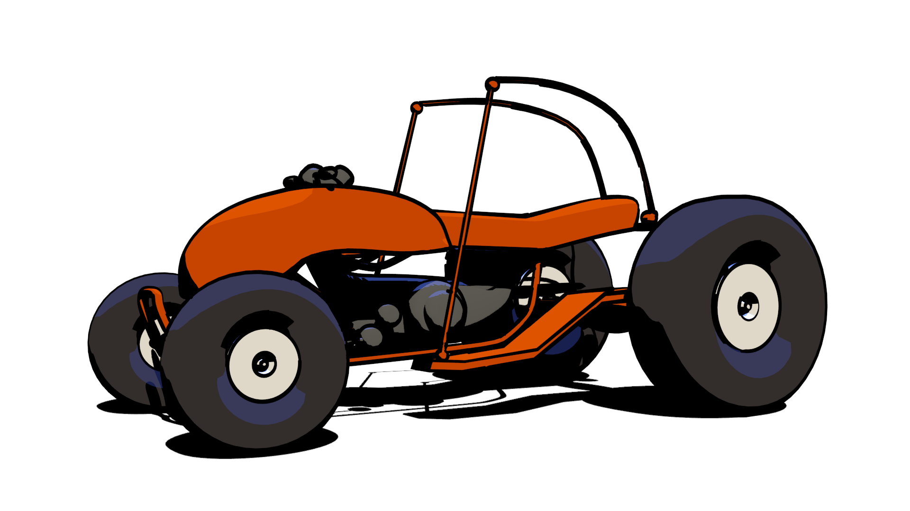

简介¶
什么是FreeStyle？¶
FreeStyle是基于边和线的非真实感（non-photorealisitc rendering, NPR）渲染引擎。基于网格和z-depth（深度）信息，FreeStyle可以根据选择的边类型来画线。FreeStyle中有各种各样的线条类型供选择来绘制出有艺术感图片（例如，手绘，水彩，或者技术用的硬线条）。
有两种操作模式： Python 脚本 和 参数编辑器 -- 可以画出多种多样的线条风格。在Python中预存了多种线条风格，比如日式的大笔刷，卡通，蓝本，有深度信息的粗线条。参数编辑器模式可以方便地编辑特征（比如虚线），设置线条类型，定义边缘。在这些功能之上，Blender还允许用户编辑线条的风格，从而使用户最大化的控制最后的渲染效果。

ATV buggy by Rylan Wright (RONIN). CC BY. (File:AtvBuggy.zip). |

By mato.sus304. CC BY-SA. (File:Mato_sus304_cut02.zip). |

OHA Studio © 中的卡通场景，Mechanimotion Entertainment. (the blend-file). |

Blueprint render of Martin M-130 from 1935 by LightBWK. CC0. Warning: heavy file! designed for stress test Blender to the limits and may crash Blender. (File:M-130Blueprint.zip). |
想看更过作品可以浏览： Release Note Artwork Showcase.
整体结构¶
- 通过勾选 面板标题左侧的复选框，启动FreeStyle。
- FreeStyle的设置选项可以在 渲染层 中找到。
- One render layer can only have one view map. A view map holds the edge detection settings (Crease Angle, Culling toggle, Face Smoothness toggle, Material Boundaries toggle, Sphere Radius and Kr Derivative Epsilon advanced options).
- A view map can have multiple line sets.
- 一个line set控制哪种线条类型和选项将被用于渲染，基于你场景中的线条。
- 每个line set使用一种线条的风格（一个线条风格可以在多个line set中共享）。
- 一个线条风格指定FreeStyle怎样渲染与其关联的line set的color，alpha，thickness，和其它属性。

FreeStyle的viewmap和处理流程框图。
已知的局限性¶
- 高内存占用：所有网格物体在一个渲染层里会一次性全部加载。
- 仅支持面结构的网格物体（faced mesh objects）。以下的网格类型会被忽略：
- 网格面是线框材质（wire material）。
- 网格面是透明材质。
- 网格面的材质选项 Cast Only 被勾选。
- 透明面（transparent face）被处理为不透明面（opaque face）。
- 面与面相交出无法检测到边缘。
- FreeStyle不支持图层蒙版。
- FreeStyle的渲染结果没有深度信息（Z depth）。
- 不支持全景相机。